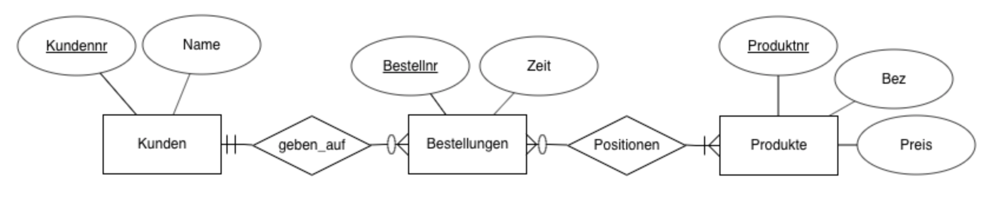

Datenbanken 1 - WS 2019/20
Dr.-Ing. Johannes Schildgen
johannes.schildgen@h-da.de
Übungsblatt 4 vom 02./09./10.12.2019
Dr.-Ing. Johannes Schildgen
johannes.schildgen@h-da.de
Übungsblatt 4 vom 02./09./10.12.2019

Abgabe-Deadline: 02.12.2019 12:00 im Moodle
Erstellen Sie CREATE TABLE-Befehle, um das folgende ER-Diagramm eines sozialen Netzwerkes in Datenbanktabellen zu überführen. Verwenden Sie zur Umsetzung der Generalisierung die vertikale Partitionierung. Achten Sie auf Primärschlüssel, Fremdschlüssel, UNIQUE-, CHECK- und NOT NULL-Constraints sowie DEFAULT-Werte und wählen Sie geeignete Datentypen. Das eingesetzte DBMS soll PostgreSQL sein.
Hinweise:
Sie können das Schema entweder auf http://sqlfiddle.com/ erstellen (wählen Sie dort oben PostgreSQL 9.6 aus) oder sich mit der PostgreSQL der Hochschule (siehe Aufgabe 3) verbinden.
Nutzen Sie das CASE-Tool (Computer-aided Software Engineering) ERDplus (https://erdplus.com), um das folgende ER-Diagramm zunächst in ein Relationenschema und dieses dann in SQL-Tabellen zu konvertieren. Verwenden Sie dazu wie hier abgebildet die Krähenfuß-Notation (Martin-Notation).
Was aus dem ER-Diagramm lässt sich in dem erzeugten SQL nicht ausdrücken?
Richten Sie zunächst Ihren PostgreSQL-Benutzer ein (siehe auch https://code.fbi.h-da.de/lab-docs/db/wikis/postgresql/Zentraler-PostgreSQL-Server):
postgres.fbi.h-da.de (Port 22) mit Ihrem st...-Benutzer, bestätigen Sie die SSH-Keys und schließen Sie die Verbindung wieder.Nun können Sie den SQL-Client DBeaver verwenden und dort eine Verbindung zu der folgenden PostgreSQL-Datenbank einrichten:
Legen Sie nun die Tabellen aus Aufgabe 2 an und formulieren Sie diese Anfragen mit SQL:
| 1. | Fügen Sie Kundin 1 mit dem Namen Olivia Opel ein und Kunde 2, Peter Pavonski ein. |
| 2. | Geben Sie die Kundentabelle vollständig aus. |
| 3. | Ändern Sie den Namen von Kundin 1 in Olivia von Opel. |
| 4. | Wie viele Kunden gibt es? |
| 5. | Welche Kunden haben ein ' von ' im Namen? |
| 6. | Löschen Sie Kunde 2. |